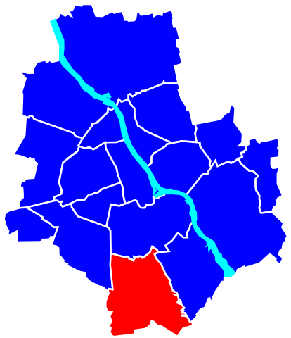

Ursynów jest dzielnicą Warszawy. Jest on położony w południowej części Warszawy, na lewym brzegu Wisły. Obszar Ursynowa oficjalnie został włączony do Warszawy w 1951 roku, kiedy znajdowały się tam liczne wsie. W 1971 roku został rozstrzygnięty konkurs na projekt Ursynowa, a w 1975 roku zaczęto budowę pierwszego osiedla.
